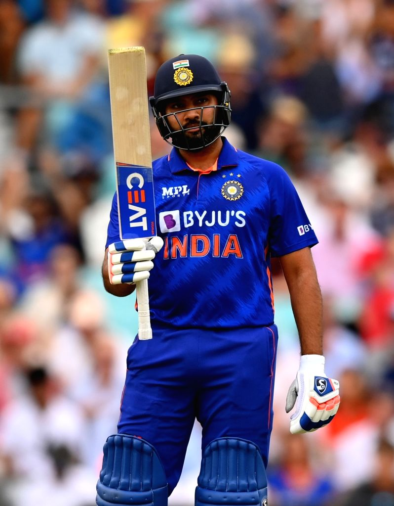

Cricket Verse
Cricket Verse
Your Ultimate Cricket Destination
Your Ultimate Cricket Destination

Rohit Sharma, popularly known as the "Hitman", is one of India's greatest opening batters and among the most successful captains in modern cricket. He is famous for elegant stroke play, record-breaking ODI innings and outstanding leadership.
Rohit Sharma made his international debut in 2007. Initially playing in the middle order, he later became one of the greatest opening batters in world cricket. His calm batting style, powerful six-hitting ability and consistency have made him one of India's finest cricketers.
He has represented India in all three formats and has captained the national team in major ICC tournaments. Rohit is also one of the most successful captains in IPL history with Mumbai Indians.
Rohit Sharma has scored thousands of international runs across Tests, One Day Internationals and T20 Internationals. He is the only cricketer to score three double centuries in ODI cricket and has multiple centuries in ICC Cricket World Cups.
Rohit Sharma has spent most of his IPL career with Mumbai Indians. Under his captaincy, Mumbai Indians won multiple IPL titles, making him one of the most successful IPL captains in history. He is also among the highest run-scorers in the tournament.
| Format | Matches | Runs | 100s | Highest Score |
|---|---|---|---|---|
| Tests | Approx. 70+ | 4300+ | 12+ | 212 |
| ODIs | 270+ | 11000+ | 30+ | 264 |
| T20Is | 150+ | 4200+ | 5 | 121* |
| IPL | 270+ | 6900+ | 2 | 109* |
Rohit Sharma is an Indian international cricketer and one of the greatest opening batters in world cricket.
He is known as "Hitman" because of his effortless six-hitting ability and record-breaking big scores.
His highest ODI score is 264, the highest individual score in One Day International history.
He is the only player to score three double centuries in ODI cricket.
He has been one of the most important players of Mumbai Indians in the Indian Premier League.